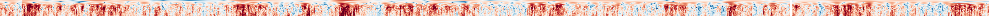

Plate reconstructions, age grids and magnetisation models are only useful if other people can get at them. I try to publish the data and code behind published work rather than leaving it in a paper's supplementary material. Most of it lives in the open-source tools section of this site.
AusMIS — Australian Magnetometers in Schools
I lead AusMIS, a program building and piloting low-cost magnetometers for secondary school classrooms, so students can watch Earth's magnetic field change in close to real time and connect it to the Aurora Australis and to real geoscience research. It's funded through AuScope (NCRIS) in partnership with IMAS, and runs as a pilot across Tasmanian schools through 2026.

A rolling feed of magnetic field data from the AusMIS Hobart observatory, the kind of live data students work with in the classroom. From AusMIS/hobart-data.
Open by default
The AusMIS code, data feeds and website are all developed in the open on GitHub, alongside the reconstruction and modelling tools I build for my own research. I also write occasionally for a general audience (see Writing).